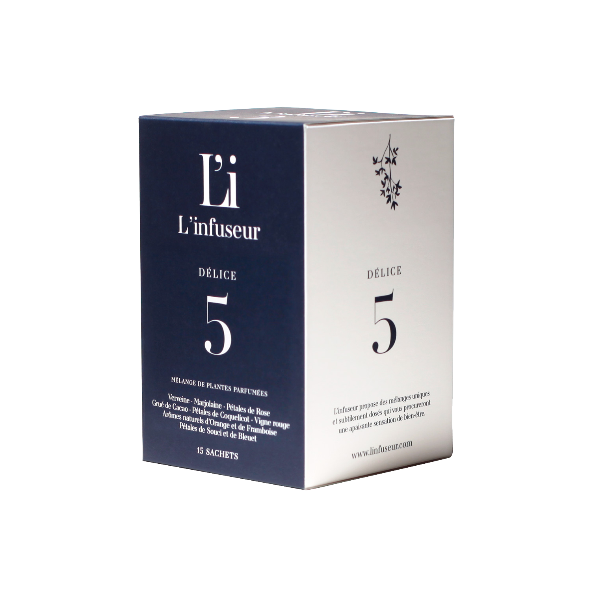

Ne vous cachez pas au fond de votre lit et infusez sans modération
Délices

Définition
Délice [DE.LIS]
Trés vif plaisir, ce qui produit ce plaisir; délectation, enchantement.
Le petit nouveau
Qui est il?
5 Délice fait oublier les préjugés négatifs sur la tisane et la positionne comme une boisson élégante et urbaine, dans l’air du temps, masculine et féminine, qui réconcilie plaisir et bienfaits.